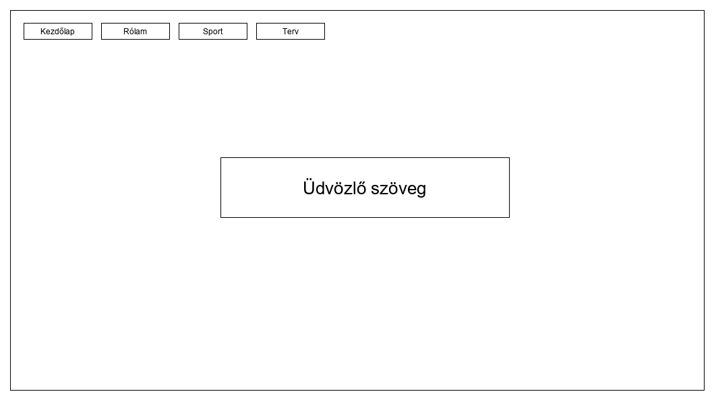
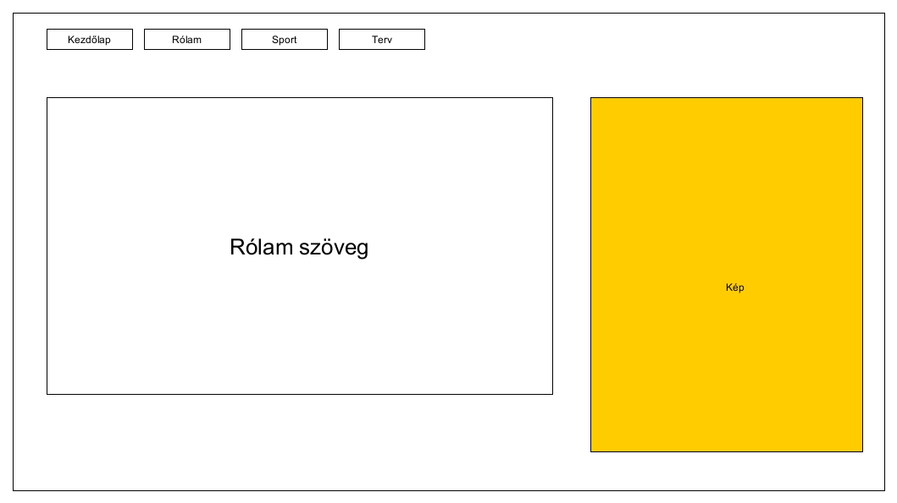
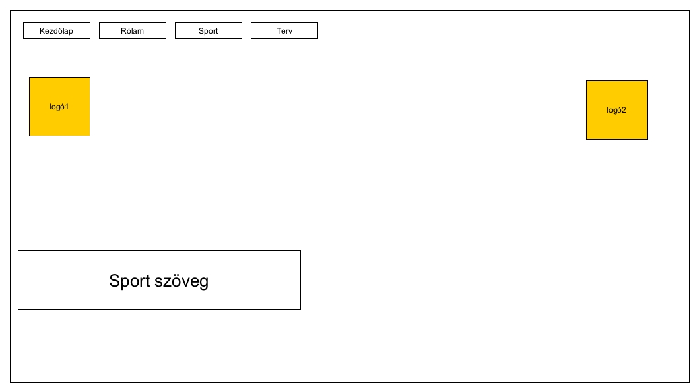

Tervezés lépései:
A honlapom készítésénél első lépésként kiválasztok egy nekem tetsző háttérképet, amely megfelő felbontásban van számomra. Ezután megtervezem a menüsávot az elvárt formátumnak megfelelően és ezt átvetítem a következő oldalakra, hogy egyöntetű legyen a minden oldal. Mindezek átláthatóságához megpróbálom a megfelelő betűtípust és méretet választani.
Elsőként kiválasztok egy nem mindennapi képet magamról. Később a személyes adataim mellett megosztom néhány személyes gondolatomat, és elképzelésemet a jövőmmel kapcsolatban.

Tanulmányaim mellett fontos számomra a versenyszerű sport, ezért mindenképpen említést teszek a honlapomon a választott sportágamról elért sikereimről és a csapatomról a fenti linkeken.